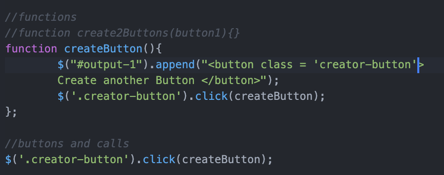

Lab 11 - Libraries and jQuery
Learning to use Libraries and jQuery with JavaScript
Challenge
Use jQuery to create event listeners and call functions instead of the ungainly plain javascript methods. I decided to create a button which could create a button which could in turn create a button.
Problems
The first version I created used the below JavaScript. The buttons created more buttons, but each button created n-i buttons (where n isthe total number of buttons and i is the button's number in order of creation).

Create and Click some buttons
It turned out this was becasue I was using the class selector '.' which added an event listener to every button in the class, duplicating the listeners on the already existing buttons. I did not know that objects could have multiple listeners so this was a puzzle at first, but a good learning experience. I fixed it by generating a unique ID for each button as it was created and then selecting the button to add the listener to by this ID. It could also have been fixed by getting the whole class and then only adding the event listener to button a button which did not already have a listener, but this way seemed a more efficient and reliable way. I would be curious to learn more about best practices for designing these systems.
Results
It works locally and globally
Buttons will apera here :)